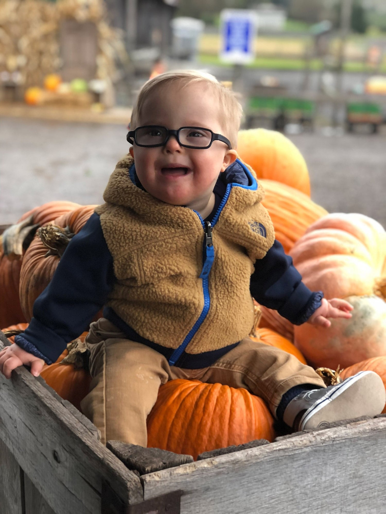

Elliot
America Down syndromeWhen we were told that Elliot had Down syndrome, I was worried that our son - just 9 days old at the time - would never be truly happy. Boy was I wrong. Elliot radiates happiness and love! He is curious, silly and smart. He loves music and books, and he makes friends wherever he goes.
Elliot has taught us to slow down and appreciate every blessing…every accomplishment…every milestone. Our days are filled with big celebrations over life’s little things.
Get involved Back to all stories